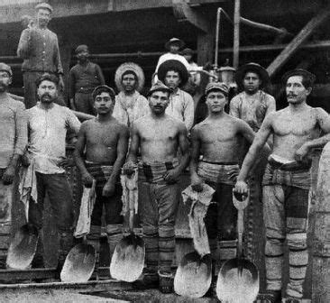
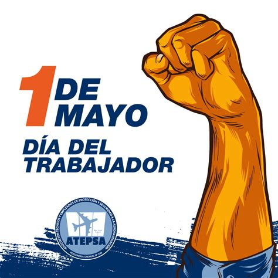

El Día del Trabajador, celebrado el 1 de mayo, es una fecha dedicada a reconocer la lucha y los logros de los trabajadores en todo el mundo. Su origen se remonta a las protestas obreras del siglo XIX, especialmente el Haymarket Affair en Chicago, donde los trabajadores exigían una jornada laboral de 8 horas. Hoy en día, este día se conmemora con marchas, actos y reflexiones sobre los derechos laborales, como salarios justos, condiciones dignas y seguridad en el trabajo. También es una oportunidad para valorar el esfuerzo de todos los trabajadores en la sociedad.

El Día Internacional del Trabajo tiene su origen en las luchas obreras del siglo XIX por mejores condiciones laborales. Este día recuerda la importancia de la unión y la defensa de los derechos de los trabajadores.
La justicia laboral busca garantizar condiciones dignas y equitativas para todos los trabajadores. Es fundamental para construir una sociedad más justa y respetuosa.
Una galería sobre el trabajo puede mostrar imágenes de obreros, campesinos y profesionales en acción. Estas representaciones destacan la diversidad y el valor del esfuerzo humano.
En Bolivia, el 1 de mayo es un feriado nacional dedicado a los trabajadores. Durante esta fecha, se realizan actos y celebraciones en reconocimiento a su esfuerzo.

Marcelo Quiroga Santa Cruz fue un defensor de la justicia social y los derechos laborales en Bolivia. Su legado inspira la lucha por la equidad y la dignidad del trabajo.
Para conocer más sobre actividades del Día del Trabajo, puedes comunicarte con organizaciones laborales locales. Ellas brindan información y orientación sobre derechos y eventos relacionados.